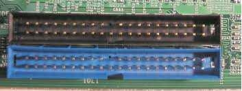
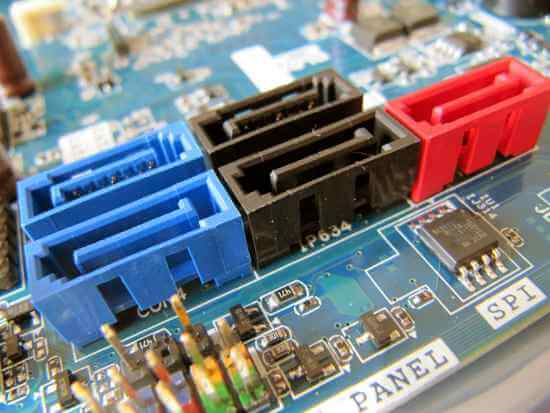

La placa base es el lugar donde se conectan todos los componentes, el encargado de que todos los componentes del ordenador esten conectados (CPU, RAM, GPU, SSD...). Está lleno de circuitos integrados de cobre donde viajan todos los bits de datos. La motherboard es como una autopista de bits (datos). Esta pieza es sumamente importante en la cual se encuentra una serie de circuitos integrados auxiliar (Chipset) que sirve para conectar el microprocesador o CPU, la memoria RAM, entre otros.
Existen diferentes tamaños de placas bases. Normalmente si tenemos una torre ATX, tendremos una placa base ATX. Podemos poner una placa base micro-atx en un chasis ATX pero no sería eficiente.
Es el controlador de tráfico entre CPU, Tarjeta Gráfica, RAM, almacenamiento y periféricos. Los expertos se han referido a él como el "pegamento" de la tarjeta madre. El chipset es básicamente la parte electrónica de la tarjeta madre que se comunica con todos los componentes conectados.
Es el firmware que se carga antes de su sistema operativo. El BIOS realiza procedimientos de arranque que comprueban los dispositivos de su sistema (desde la RAM hasta el disco duro, pasando por el teclado) y carga el sistema operativo.
Un módulo regulador de voltaje es un convertidor de potencia que suministra a un microprocesador el voltaje apropiado, convirtiendo 5 V o 12 V a un voltaje menor requerido por la CPU, permitiendo la instalación de procesadores con distintos voltajes en la misma placa madre.
El socket de una placa base es el sitio donde se instala el procesador. Ya sea de AMD o Intel, el socket proporciona el único lugar donde se puede instalar un procesador en una placa base, y existen multitud de sockets diferentes.
Las ranuras de memoria RAM son los conectores en los cuales se conectan los módulos de memoria principal del ordenador. A estos conectores también se les denomina bancos de memoria.
Una ranura (slot en inglés), también llamada ranura de expansión, es un elemento de conexión de la placa base de un ordenador que permite conectar a aquella una tarjeta adaptadora adicional, o de expansión, la cual suele realizar funciones de control de dispositivos periféricos adicionales, tales como monitores, impresoras o unidades de disco, entre muchos otros.
La interfaz IDE/ATA (acrónimo de “Integrated Drive Electronics /Advanced Technology Attachment”) o PATA (Parallel ATA) es un estándar de interfaz de conexión de dispositivos de almacenamiento masivo de datos.
Se trata de una interfaz de bus para la transferencia de datos entre la placa base y otros componentes que conectas a ella. Su uso sobre todo se dirige a conectar unidades de almacenamiento a la placa base, como pueden ser varios tipos de discos duros incluyendo modelos de SSD, o unidades de disco como BluRay o DVD
M. 2 es una interfaz que permite conectar dispositivos que suelen ser de un tamaño muy reducido, entre las que se incluyen unidades de almacenamiento SSD NVMe, así como antenas de conexión inalámbrica para Wi-Fi y Bluetooth. Esta interfaz es una variante del conector PCI Express de 4 pines o PCIe x4
El puerto USB o Universal Serial Bus (Bus Universal en Serie) es un puerto diseñado para conectar varios periféricos a una computadora. El puerto USB se encuentra en todas las computadoras modernas.
El speaker te ayuda a diagnosticar problemas de hardware en el arranque de tu PC. En los días anteriores a las interfaces gráficas de usuario, como el sistema operativo Windows, la solución de problemas y el diagnóstico de los problemas que podía haber en un equipo eran mucho más difíciles
Cuando hablamos de Panel Frontal nos referimos a las distintas conexiones que trae un gabinete ATX para ser conectadas a la mother. Independientemente del modelo o fabricante del gabinete


Se trata de un puerto diseñado para conectar teclados y ratones al ordenador, y de hecho fue uno de los primeros conectores diseñados para esta función. Se trata de conectores seriales que son controlados desde la placa base.
RJ45 es una interfaz física comúnmente utilizada para conectar redes de computadoras con cableado estructurado (categorías 4, 5, 5e, 6, 6a, 7, 7a y 8). Posee ocho pines o conexiones eléctricas, que normalmente se usan como extremos de cables de par trenzado (UTP).
Un dispositivo USB, también conocido como dispositivo flash o dispositivo de memoria, es un dispositivo pequeño y portátil que se conecta al puerto USB de su computadora. Los dispositivos USB se utilizan comúnmente para almacenamiento, respaldo de datos y transferencia de archivos entre dispositivos.

Un puerto paralelo es una interfaz entre un computador y un periférico, cuya principal característica es que los bits de datos viajan juntos, enviando un paquete de byte a la vez. Es decir, se implementa un cable o una vía física para cada bit de datos formando un bus.
El puerto serie es una interfaz de comunicación digital de datos en la que la información se transmite de forma secuencial bit a bit por los conductores. De esta forma un puerto serie debe enviar toda la información en un bit detrás de otro, mientras que un puerto paralelo enviaría varios bits de forma simultánea
Se utiliza para conectar dispositivos, tales como monitores CRT, pantallas LCD, proyectores de video y computadoras portátiles. Se encarga de enviar las señales desde la computadora hacia la pantalla con soportes de 256 a 16,7 millones de colores y resoluciones.


HDMI responde a las siglas High Definition Multimedia Interface (interfaz multimedia de alta definición) y hace referencia a la norma de conexión que permite transmitir audio y vídeo sin comprimir desde un equipo a otro y con un único cable, incluido el contenido en alta definición.
DisplayPort es una interfaz digital estándar de dispositivos desarrollado por la Asociación de Estándares Electrónicos de Vídeo (VESA). Libre de licencias y cánones, define un tipo de interconexión destinado a la transmisión de vídeo entre una computadora y su monitor.
Las siglas DVI vienen de Digital Visual Interface, lo que en español significa Interfaz Visual Digital. Se trata de un tipo de conexión de vídeo destinada a llevar la señal de la tarjeta gráfica de tu ordenador al monitor.

![]()
Verde: Salida de audio (altavoces, auriculares)
Azul: Entrada de Audio tipo midi (instrumentos)
Rosa: Entrada de Audio tipo mono (microfonos)
Amarillo: Salida de aduio estero (altavoz central)
Negro: Salida de audio estereo (altavoces traseros)
Gris: Salida de audio estereo (altavoces delanteros)